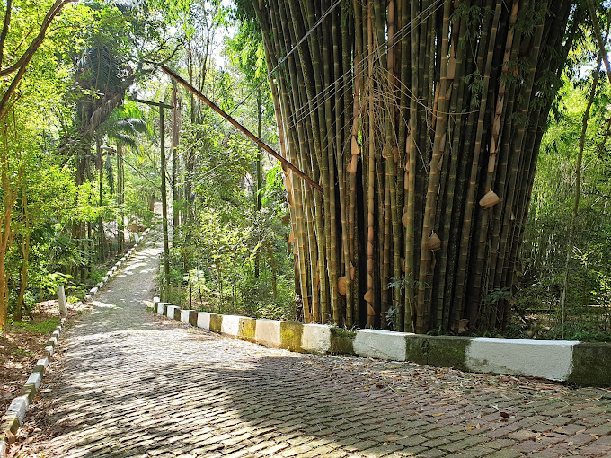

Jardim Botânico de Jandira
O Jardim Botânico de Jandira é um local encantador que abriga diversas espécies de plantas nativas da região, oferecendo uma experiência relaxante em meio à natureza.
Localização: Av. Brasil, 1234 - Jandira/SP
Horário de Funcionamento: Todos os dias, das 8h às 17h